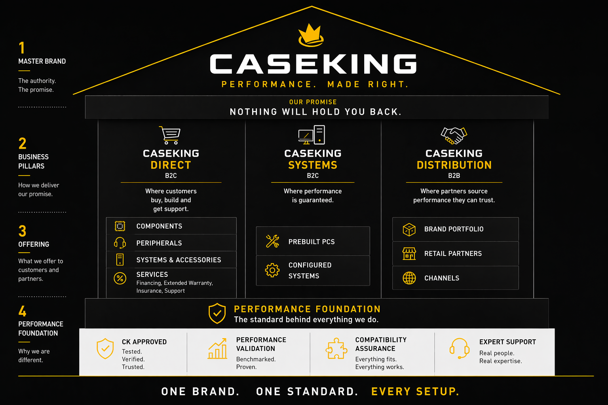

01
Shop
One answer.
Hero
The Problem
Ask 5 teams what Caseking is, you get 5 answers.
01
One answer.
02
Another answer.
03
A third answer.
04
A strategic answer.
05
An operational answer.
All true.
Not aligned.
The Consequence
Messaging changes across channels. Visuals lack consistency. Tone of voice shifts. Decisions are made in silos.
01
What Caseking means shifts depending on the channel or context.
02
The visual language changes before the brand meaning is fixed.
03
Authority, utility, and hype compete with each other across touchpoints.
04
Teams optimize locally instead of building one shared brand system.
We don't build one brand.
We build many versions of it.
The Reality
Today
Hardware strength, product depth, and credibility already create results.
The commercial engine works, but the brand layer is not doing enough on top of it.
But
The Complexity
One company. Multiple interfaces.
B2C
Where product choice, buying confidence, and trust are experienced directly.
B2B
Where reliability, credibility, and channel confidence shape the relationship.
Systems
Where complete setups prove whether the Caseking promise really works.
Distribution
Where the brand meets operational performance, channel reach, and standards.
One company. Multiple interfaces.
Without a clear idea, each role tells a different story.
The Shift
Not more campaigns. Not more guidelines.
01
The point is a shared idea that people can repeat, use, and apply.
02
The point is a system that shapes choices across teams, channels, and interfaces.
The Idea
This is what Caseking stands for.
What It Means
This is how the idea becomes practical.
01
No part of the setup should undermine the performance promise.
02
Compatibility and curation are part of what customers and partners buy from us.
03
We reduce uncertainty through expertise, validation, and the way we structure the offer.
Meaning
Why It Works
One idea. Across B2C and B2B.
For customers
The idea gives the customer a simple, usable promise they can feel in every recommendation and purchase.
For partners
The same idea gives partners a commercial standard they can trust and repeat with confidence.
What Changes
Different executions. Same core idea.
01
Caseking stands for one clear promise instead of multiple competing definitions.
02
How we speak becomes more consistent across channels, teams, and formats.
03
Creative and commercial decisions point toward the same brand outcome.
The System
Everything aligns to the same core idea.
01 - Brand Essence
The core idea at the center
We make sure everything works as it should.
No weak links. No guesswork. No compromises.
This is the foundation for everything we do.
02 - Messaging
What we say and what we emphasize
We emphasize
If it doesn't perform, it's not here.
03 - Tone of Voice
How the idea sounds in practice
We speak like
No fluff. No corporate language. No overpromising.
04 - Visual Language
How the idea looks and feels
We show
Proof
Benchmarks, details, builds.
Precision
Materials, components, systems.
Form follows function. Always.
05 - Architecture
How the brand is structured consistently
Caseking
Master brand.
Owns the meaning: Performance. Made Right.
Business pillars
Offer
Foundation
One brand. Multiple roles. One consistent idea.

Call To Action
Marketing. Product. Sales. Design. Content. Partners.
Close